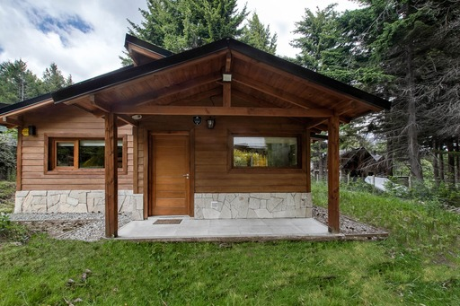

La cabaña
Espacio para descansar, compartir y sentirse en casa.
Una cabaña completa de 70 m² en Villa Llao Llao, para hasta cinco huéspedes, rodeada de bosque y con el confort de una estadía sin apuro.

Para 5 huéspedes
Dos dormitorios, dos baños, living, comedor y cocina. El dormitorio principal tiene cama queen; el segundo, tres camas individuales.
Comodidades
- Wi‑Fi por fibra óptica
- TV 4K y servicios de streaming
- Área de trabajo
- Lavarropas, heladera, horno y microondas
- Ropa de cama y toallas
Al aire libre
- Jardín y sector de picnic
- Fogón y parrilla
- Estacionamiento privado gratuito
- Mascotas bienvenidas
- Cuna sin cargo para 0 a 3 años